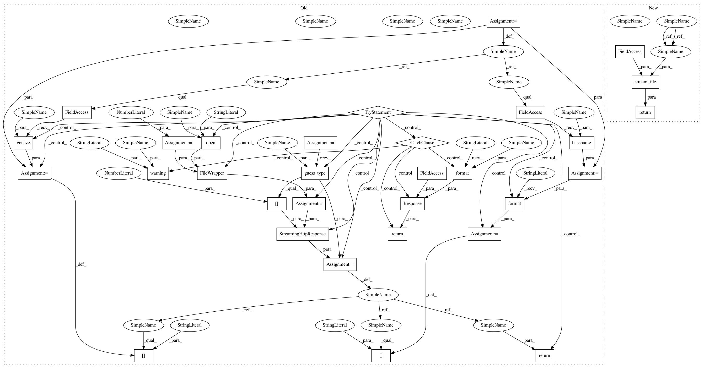

f4fe87292f4a0f4f728969a7615bbd3be39f6c91,polyaxon/api/build_jobs/views.py,BuildLogsView,get,#BuildLogsView#Any#,221
Before Change
process_logs(build=self.build, temp=True)
log_path = stores.get_job_logs_path(job_name=job_name, temp=True)
filename = os.path.basename(log_path)
chunk_size = 8192
try:
wrapped_file = FileWrapper(open(log_path, "rb"), chunk_size)
response = StreamingHttpResponse(wrapped_file,
content_type=mimetypes.guess_type(log_path)[0])
response["Content-Length"] = os.path.getsize(log_path)
response["Content-Disposition"] = "attachment; filename={}".format(filename)
return response
except FileNotFoundError:
_logger.warning("Log file not found: log_path=%s", log_path)
return Response(status=status.HTTP_404_NOT_FOUND,
data="Log file not found: log_path={}".format(log_path))
class BuildStopView(BuildEndpoint, CreateEndpoint):
Stop a build.
serializer_class = BuildJobSerializer
After Change
job_name = self.build.unique_name
if self.build.is_done:
log_path = stores.get_job_logs_path(job_name=job_name, temp=False)
log_path = archive_logs_file(
log_path=log_path,
namepath=job_name)
else:
process_logs(build=self.build, temp=True)
log_path = stores.get_job_logs_path(job_name=job_name, temp=True)
return stream_file(file_path=log_path, logger=_logger)
class BuildStopView(BuildEndpoint, CreateEndpoint):
Stop a build.
In pattern: SUPERPATTERN
Frequency: 4
Non-data size: 31
Instances
Project Name: polyaxon/polyaxon
Commit Name: f4fe87292f4a0f4f728969a7615bbd3be39f6c91
Time: 2019-02-27
Author: mouradmourafiq@gmail.com
File Name: polyaxon/api/build_jobs/views.py
Class Name: BuildLogsView
Method Name: get
Project Name: polyaxon/polyaxon
Commit Name: f4fe87292f4a0f4f728969a7615bbd3be39f6c91
Time: 2019-02-27
Author: mouradmourafiq@gmail.com
File Name: polyaxon/api/jobs/views.py
Class Name: JobLogsView
Method Name: get
Project Name: polyaxon/polyaxon
Commit Name: f4fe87292f4a0f4f728969a7615bbd3be39f6c91
Time: 2019-02-27
Author: mouradmourafiq@gmail.com
File Name: polyaxon/api/experiments/views.py
Class Name: ExperimentJobLogsView
Method Name: get
Project Name: polyaxon/polyaxon
Commit Name: f4fe87292f4a0f4f728969a7615bbd3be39f6c91
Time: 2019-02-27
Author: mouradmourafiq@gmail.com
File Name: polyaxon/api/build_jobs/views.py
Class Name: BuildLogsView
Method Name: get
Project Name: polyaxon/polyaxon
Commit Name: f4fe87292f4a0f4f728969a7615bbd3be39f6c91
Time: 2019-02-27
Author: mouradmourafiq@gmail.com
File Name: polyaxon/api/experiments/views.py
Class Name: ExperimentLogsView
Method Name: get